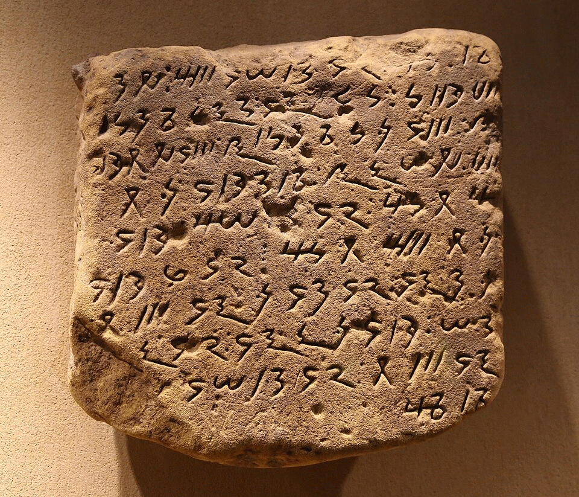
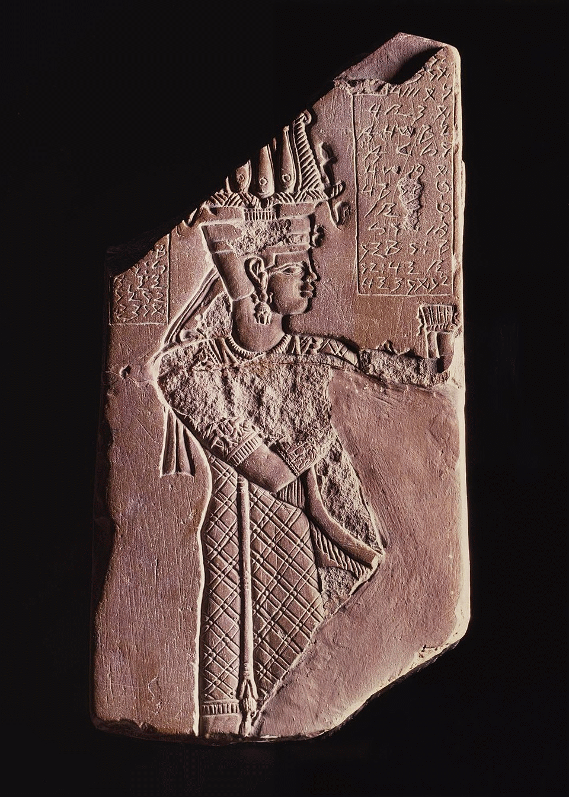
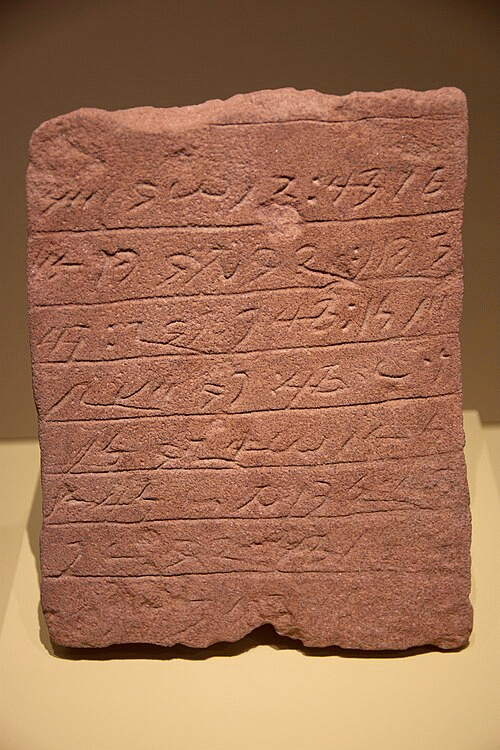
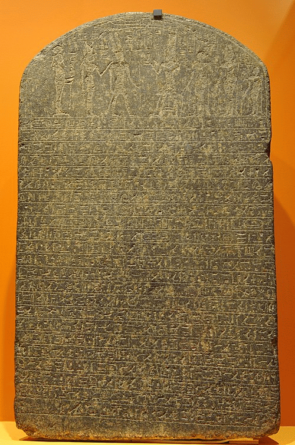

Le méroïtique est mort. Claude Rilly veut le ressusciter. L’énoncé est simple ; l’affaire est délicate. Elle était même réputée perdue ou presque jusqu’à ces toutes dernières années.

La langue méroïtique
La langue des royaumes de Kerma, de Napata et de Méroé, qui se sont succédés sur le territoire de l’actuel Soudan, entre le milieu du troisième millénaire avant J.-C. et le 4e siècle de l’ère chrétienne, s’est éteinte de longue date. « Vraisemblablement au tout début du Moyen Age », dit le chercheur, et « sans descendance ». L’idiome de Méroé a cependant laissé d’abondantes traces écrites : environ un millier de documents ont, à ce jour, été exhumés, textes magiques ou funéraires, édits royaux, etc. Dès le 3e siècle avant J.-C., les Méroïtes ont adapté à leur langue l’écriture inventée quelque vingt-cinq siècles plus tôt en Egypte, le puissant suzerain du nord. Les relations sont en effet étroites entre les civilisations koushitique et égyptienne. L’Egypte a dominé, plusieurs siècles durant, le pays de Koush. Quant à ce dernier, il a donné à l’Égypte les rois de la 25e dynastie (environ 715-656 avant J.-C.), celle des « pharaons noirs », ainsi dénommés pour la couleur de leur peau.
Pour la majorité des linguistes, la probabilité était grande que la langue de Méroé soit un isolat, c’est-à-dire une langue sans aucun apparentement connu, à la manière du sumérien en Mésopotamie, de l’étrusque méditerranéen ou encore du basque, toujours parlé en France et en Espagne. Si tel avait été le cas, les chances de pouvoir comprendre un jour le parler des pharaons noirs auraient été nulles ou presque. Le sumérien, langue principalement liturgique morte dès le milieu du troisième millénaire avant J.-C., n’a pu être reconstitué que grâce à la présence massive de tablettes bilingues suméro-akkadiennes. Quant à l’étrusque, qui a vraisemblablement perdu ses derniers locuteurs peu après l’émergence de Rome, il résiste encore et toujours à la sagacité des linguistes.
Quelques stèles bilingues ont, certes, permis de traduire un petit corpus de termes méroïtiques. Rien qui permette, tant s’en faut, la compréhension totale des textes exhumés. Egyptologue, disciple de Jean Leclant, le fondateur, dans les années 1950, de l’école française d’études nubiennes, sans formation initiale de linguiste, Claude Rilly a formulé, ces dernières années, l’ambitieuse hypothèse d’un apparentement du méroïtique avec plusieurs langues parlées dans l’actuel Soudan, au Tchad et en Erythrée. Etudiés depuis une vingtaine d’années par le linguiste américain Lionel Bender, le nubien, les dialectes taman, le nara ou encore le nyima ont été rassemblés par M. Rilly, avec le méroïtique, dans le groupe soudanique oriental nord (SON), sous-ensemble de la grande famille des langues nilo-sahariennes. Les comparaisons entre des termes méroïtiques connus et leurs équivalents dans les différentes langues du groupe SON valident le postulat de M. Rilly. Mais, pour ouvrir définitivement la voie à la compréhension totale du méroïtique, il reste à reconstituer le lexique du proto-SON, la protolangue dont dérivent ces idiomes. Une tâche considérable, d’autant que toutes les langues du groupe ne sont pas encore totalement documentées.
La traduction des édits des souverains de Méroé permettrait d’éclaircir certaines zones d’ombre de l’histoire du pays de Koush, mais aussi de son voisin égyptien. Outre les aspects historiques et linguistiques, ces travaux, de l’aveu même de M. Rilly, présentent une dimension « presque politique ». Puisque l’égyptien parlé à la cour des pharaons (dont dérive le copte) est une langue chamito-sémitique apparentée aux idiomes du Levant, le méroïtique est en effet la première langue typiquement africaine à avoir été écrite. La retrouver serait, aussi, rendre à l’Afrique une part glorieuse, mais perdue, de son histoire.
Stéphane Foucard/Le Monde 2005

L'alphabet méroïtique
Le syllabaire méroïtique existe sous deux formes, cursive et hiéroglyphique. Il a été entièrement décrypté, en 1911, par l’égyptologue britannique Francis Llewelyn Griffith, grâce à une stèle bilingue comprenant des inscriptions hiéroglyphiques égyptiennes et méroïtiques. Celle-ci a permis d’établir les valeurs phonétiques de chaque signe du système graphique. Toutes les inscriptions peuvent donc être lues et prononcées. Mais elles demeurent incomprises.